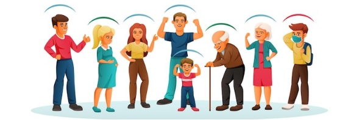
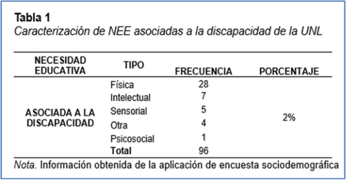

Investigación

Surge ante la necesidad de fortalecer los procesos inclusivos en la educación superior ecuatoriana. A pesar de los avances normativos, aún existen barreras estructurales, actitudinales y pedagógicas que limitan el acceso y permanencia de estudiantes con NEE. El proyecto aborda esta realidad mediante una estrategia investigativa que integra el análisis jurídico, psicopedagógico y social, con el fin de construir una propuesta de inclusión educativa universitaria sustentada en la evidencia empírica..
Problemática
- Persisten brechas en la identificación y atención a estudiantes con NEE
- La formación docente en inclusión educativa es insuficiente.
- Las políticas y prácticas institucionales no siempre responden al principio de equidad.
- Escasa articulación entre los servicios de bienestar estudiantil y las necesidades psicopedagógicas reales del alumnado.
Objetivo General
Analizar los factores que influyen en el aprendizaje significativo de estudiantes con NEE asociadas o no a la discapacidad, para diseñar una propuesta inclusiva que fortalezca los procesos de enseñanza-aprendizaje en la UNL.
Objetivos Específicos
- Caracterizar la población universitaria con NEE desde una perspectiva socioeducativa.
- Evaluar el bienestar emocional, motivacional y las estrategias de aprendizaje de los estudiantes.
- Analizar las prácticas inclusivas docentes y el uso del Diseño Universal para el Aprendizaje (DUA).
- Proponer rutas y protocolos de intervención inclusiva institucional.
Fundamentación teórica
La investigación se sustenta en un enfoque psicopedagógico, inclusivo y socioconstructivista, que concibe el aprendizaje significativo como un proceso de interacción entre los factores cognitivos, emocionales, sociales y contextuales del estudiante.
Teorías del aprendizaje humano
David Ausubel (1963) plantea que el aprendizaje significativo ocurre cuando los nuevos conocimientos se relacionan de manera sustantiva y no arbitraria con los saberes previos del estudiante. Esta teoría sirve de base para comprender cómo los estudiantes con NEE integran los contenidos académicos, dependiendo de sus experiencias, motivación y nivel de apoyo recibido.
Lev Vygotsky (1978) introduce la Teoría Sociocultural y el concepto de Zona de Desarrollo Próximo (ZDP), que destaca el papel mediador del docente y del contexto social en la construcción del conocimiento. Desde este enfoque, la inclusión implica adaptar el entorno educativo a las potencialidades del estudiante, más que exigir que el estudiante se adapte al entorno.
Jerome Bruner (1984) refuerza la importancia de la mediación y el descubrimiento guiado como vías para fomentar la autonomía y la motivación intrínseca en el proceso de enseñanza-aprendizaje.
Albert Bandura (1986) aporta la Teoría del Aprendizaje Social, enfatizando la observación, la imitación y la autorregulación como factores que intervienen en el desarrollo de conductas de aprendizaje y adaptación educativa.
Perspectiva inclusiva
La inclusión educativa se fundamenta en el derecho a la educación sin discriminación, reconocido en la Constitución de la República del Ecuador (2008), la Ley Orgánica de Educación Intercultural (LOEI, 2011), la Ley Orgánica de Discapacidades (LOD, 2012) y el Reglamento de Régimen Académico del CES (2019). Estas normas establecen la obligatoriedad del Estado y de las instituciones de educación superior de garantizar igualdad de oportunidades, accesibilidad y permanencia de todas las personas.
A nivel internacional, la Declaración de Salamanca (UNESCO, 1994) y el Marco de Acción de Incheon (2015) promueven una educación inclusiva centrada en la equidad y la participación activa. Booth y Ainscow (2000, 2020), en su Index for Inclusion, conciben la inclusión como un proceso continuo que abarca cultura, políticas y prácticas institucionales orientadas a eliminar barreras al aprendizaje y la participación.
Perspectiva psicopedagógica y socioemocional
El enfoque psicopedagógico reconoce la interacción de los factores emocionales y motivacionales en el proceso educativo. Instrumentos como la DASS-21 y el MSLQ-SF permiten comprender el papel de la autorregulación emocional, la motivación intrínseca y las estrategias cognitivas en la consolidación del aprendizaje significativo. La comprensión de estos factores resulta fundamental para el diseño de intervenciones inclusivas y adaptativas en el contexto universitario.
Diseño Universal para el Aprendizaje (DUA)
El DUA, promovido por el Center for Applied Special Technology (CAST, 2018), plantea la necesidad de ofrecer múltiples medios de representación, expresión y participación, de modo que todos los estudiantes puedan acceder al aprendizaje según sus particularidades. En la educación superior, su aplicación favorece una docencia flexible e inclusiva, que responde a la diversidad cognitiva, sensorial, cultural y emocional de los estudiantes.
APORTE DEL PROYECTO
El proyecto tiene un impacto multidimensional en la formación universitaria, la gestión institucional y la práctica docente.
Aporte académico
Proporciona evidencia científica sobre el aprendizaje significativo y las NEE en el contexto universitario ecuatoriano.Integra herramientas de evaluación, diagnóstico y seguimiento que fortalecen el trabajo psicopedagógico en la UNL.Contribuye al desarrollo de una línea investigativa institucional sobre inclusión, diversidad y bienestar estudiantil.
Aporte pedagógico
Promueve una docencia basada en el DUA y en la mediación activa, adaptando los procesos de enseñanza a la diversidad del aula.Propone estrategias metodológicas y didácticas innovadoras centradas en la motivación, la autorregulación y la equidad educativa.Favorece el diseño de entornos virtuales accesibles y materiales adaptados, reforzando el aprendizaje autónomo y colaborativo.
Aporte institucional
Fortalece la política universitaria de inclusión y bienestar estudiantil, alineándola con los ODS y los principios del Plan Estratégico UNL 2024–2028.Genera rutas, protocolos y herramientas que pueden ser adoptadas por las distintas facultades como modelos de intervención psicopedagógica. Posiciona a la UNL como referente nacional en investigación aplicada sobre educación inclusiva y diversidad en la educación superior.
Aporte social
Promueve una cultura universitaria basada en el respeto, la equidad y la justicia social. Fomenta la sensibilización comunitaria hacia la discapacidad y las diferencias individuales. Contribuye al fortalecimiento de la cohesión social y la participación estudiantil en contextos de diversidad.
información

Comprendiendo las NEE en la UNL: Definiciones, Manifestaciones y Orientaciones Iniciales
Descarga el documento!!
Introducción
Los estudiantes con Necesidades Educativas Específicas (NEE) enfrentan retos en el ámbito académico que pueden limitar su pleno desarrollo y participación. Entre los más prevalentes se encuentran la falta de accesibilidad en materiales educativos, la escasa capacitación docente para atender sus necesidades de manera inclusiva y las barreras físicas, sociales y actitudinales presentes en los entornos escolares (Azrak, 2017).
A menudo se enfrentan con dificultades para establecer relaciones interpersonales y la participación activa en actividades grupales debido a prejuicios o estigmas asociados a su condición, generando frustración y desmotivación. Esto resalta la necesidad de implementar estrategias pedagógicas y políticas educativas que promuevan una educación inclusiva, equitativa y adaptada.
En la Universidad Nacional de Loja, el objetivo de esta investigación es crear prácticas y procesos inclusivos para estudiantes con necesidades educativas asociadas o no a la discapacidad, incidiendo en la experiencia de aprendizaje.


¿Qué son las NEE en Ecuador?
Dificultades o requerimientos de apoyos extraordinarios —temporales o permanentes— que afectan el aprendizaje y participación, y que requieren adaptaciones curriculares, accesibilidad, acompañamiento y recursos adicionales.
Manifestaciones comunes
- Bajo rendimiento no explicado por falta de esfuerzo.
- Dificultades para seguir el ritmo de la clase.
- Necesidad de apoyos técnicos o humanos.
- Estrés académico por barreras de acceso.
Qué puede hacer la Educación Superior
- Proveer materiales accesibles desde el inicio del periodo.
- Uso del DUA (Diseño Universal para el Aprendizaje).
- Tutorías semanales y evaluaciones diferenciadas sin reducir calidad.
Adaptaciones curriculares posibles
- Ampliación de tiempo de evaluación.
- Entrega de documentos en formatos accesibles (Word, PDF accesible, letra adecuada).
- Evaluaciones orales o escritas según el caso.
1. NEE Asociadas a Discapacidad
¿Qué son? Necesidades derivadas de una condición discapacitante certificada, que afectan el funcionamiento intelectual, motor, sensorial, psicosocial o múltiple. Requieren adaptaciones curriculares significativas, accesibilidad y apoyos profesionales.
| Tipo de Discapacidad |
Síntomas o Manifestaciones Comunes |
¿Qué hacer en Educación Superior? |
| Discapacidad Intelectual |
- Dificultad para razonamiento abstracto.
- Procesamiento lento.
- Necesidad de instrucciones simples.
- Dificultad para planificar tareas complejas.
|
- Dar instrucciones claras, breves y paso a paso.
- Usar ejemplos concretos y lenguaje sencillo.
- Reforzar instrucciones por escrito.
- Dividir tareas grandes en partes pequeñas.
|
| Discapacidad Visual |
- Dificultad para leer textos pequeños.
- Problemas de orientación o movilidad.
- Necesidad de braille, audio o lectores de pantalla.
|
- Material accesible (PDF etiquetado, letra grande, alto contraste).
- Leer en voz alta lo que se proyecta.
- Permitir uso de software lector de pantalla.
- Ubicación preferencial en el aula.
|
| Discapacidad Auditiva |
- Dificultad para seguir clases orales.
- Problemas para discriminar sonidos.
- Mayor dependencia de lectura labial o intérprete.
|
- Hablar de frente, vocalizar sin exagerar.
- Subtítulos en videos y grabaciones.
- Uso de presentaciones visuales para reforzar el mensaje.
- Entregar clases o instrucciones por escrito.
|
| Discapacidad Física / Motriz |
- Limitaciones en la escritura manual.
- Dificultad para movilidad en aulas o laboratorios.
- Fatiga física.
|
- Evitar aulas con escaleras; asegurar accesibilidad.
- Permitir tomar notas con computadora/dispositivos.
- Dar más tiempo en evaluaciones.
- Permitir ingreso anticipado o preferencial.
|
| Discapacidad Psicosocial (Salud Mental) |
- Crisis de ansiedad o depresión.
- Inestabilidad emocional.
- Dificultad para socializar o participar.
|
- Flexibilizar fechas en casos de crisis.
- Crear un ambiente emocionalmente seguro.
- Evitar exposiciones obligatorias en periodos de crisis.
- Permitir pausas breves.
|
| Multidiscapacidad |
- Combinación de dos o más discapacidades.
- Requerimiento de apoyos múltiples y permanentes.
|
- Coordinación entre docente, Bienestar Universitario, intérpretes, terapeutas y carrera.
- Ajustes combinados (tiempo, recursos, accesibilidad).
|
2. NEE No Asociadas a Discapacidad
¿Qué son? Son dificultades que afectan el aprendizaje y participación sin derivarse de una discapacidad. Generalmente requieren adaptaciones no significativas, apoyo pedagógico y estrategias de aprendizaje flexible..docx]
| Tipo de NEE |
Síntomas o Manifestaciones Comunes |
¿Qué hacer en Educación Superior? |
| TDAH |
- Inquietud, impulsividad.
- Dificultad para mantener atención.
- Problemas de organización y entrega de trabajos.
|
- Dar instrucciones claras y breves.
- Repetir instrucciones por escrito.
- Dividir tareas grandes.
- Uso de apoyos visuales.
- Asientos en primera fila.
|
| Dificultades Específicas de Aprendizaje (DEA) |
- Dislexia: inversión de letras, lectura lenta.
- Discalculia: dificultad en cálculos básicos.
- Disgrafía: escritura ilegible.
|
- Permitir evaluaciones orales o mixtas.
- Tiempo adicional en exámenes.
- Materiales con tipografía accesible.
- Uso de correctores ortográficos o calculadoras.
|
| Trastornos del Lenguaje |
- Dificultad para expresar ideas.
- Limitaciones para comprender textos complejos.
|
- Dar instrucciones simples con imágenes.
- Evitar evaluaciones solo orales.
- Facilitar glosarios y esquemas.
|
| Altas Capacidades Intelectuales |
- Aprendizaje acelerado.
- Necesidad de mayor reto académico.
- Aburrimiento en clases tradicionales.
|
- Ofrecer actividades de profundización.
- Permitir participación en proyectos de investigación.
- Minimizar actividades repetitivas.
|
3. NEE por Situaciones de Vulnerabilidad
¿Qué son? Necesidades derivadas de condiciones sociales, culturales, económicas o de protección, que generan barreras para estudiar, participar o permanecer en la educación superior..docx]
| Grupo de Vulnerabilidad |
Síntomas o Manifestaciones Comunes |
¿Qué hacer en Educación Superior? |
| Mujeres y niñas |
- Riesgo de violencia de género.
- Embarazo adolescente / maternidad temprana.
- Roles de cuidado que afectan asistencia.
|
- Flexibilizar asistencia en maternidad.
- Activar protocolos de violencia de género.
- Garantizar espacios seguros.
|
| Migrantes, refugiados, asilados |
- Barrera del idioma.
- Falta de documentos.
- Choque cultural.
|
- Aceptar documentos alternativos.
- Material bilingüe o simplificado.
- Tutorías de adaptación cultural.
|
| Pueblos indígenas |
- Barreras lingüísticas.
- Discriminación racial.
|
- Pertinencia cultural en contenidos.
|
La atención a las Necesidades Educativas Específicas (NEE) en la educación superior es un componente esencial para garantizar una formación inclusiva, equitativa y de calidad. Reconocer la diversidad del estudiantado implica identificar y reducir las barreras académicas, sociales y actitudinales que afectan el aprendizaje y la participación.
Las NEE, asociadas o no a la discapacidad, así como aquellas derivadas de situaciones de vulnerabilidad, requieren respuestas pedagógicas flexibles, accesibles y contextualizadas. La implementación de adaptaciones curriculares pertinentes, el uso del Diseño Universal para el Aprendizaje (DUA) y el acompañamiento institucional fortalecen la inclusión y calidad educativa.
La Universidad Nacional de Loja reafirma su compromiso con la educación inclusiva y el respeto a la diversidad, reconociendo que todas las personas tienen derecho a una formación superior en condiciones de equidad, accesibilidad y dignidad.
Esta guía constituye un instrumento orientador que busca fortalecer las prácticas pedagógicas inclusivas, sensibilizar a la comunidad universitaria y contribuir a la identificación y atención oportuna de las Necesidades Educativas Específicas de las y los estudiantes, en concordancia con la normativa nacional y los principios de derechos humanos.
La inclusión no es una acción aislada, sino un proceso continuo que requiere el trabajo articulado de docentes, autoridades, personal administrativo y unidades de apoyo institucional. Desde la Universidad Nacional de Loja se promueve una educación superior que valore la diversidad como una fortaleza y garantice oportunidades reales de aprendizaje, participación y permanencia para toda la comunidad estudiantil.
Metodología

La metodología del proyecto adopta un enfoque mixto (cuantitativo-cualitativo) que combina el rigor estadístico con la comprensión profunda de las realidades subjetivas y contextuales de los estudiantes.
Enfoque cuantitativo
Permite medir y analizar las variables relacionadas con la inclusión, bienestar emocional, motivación y estrategias de aprendizaje. Se utilizan instrumentos estandarizados (DASS-21, ESADIE, MSLQ-SF) que garantizan validez y confiabilidad psicométrica, con un análisis descriptivo e inferencial mediante SPSS (versión 28).
Enfoque cualitativo

Busca comprender las percepciones, experiencias y significados asociados a la inclusión universitaria. Se emplean entrevistas semiestructuradas y análisis de contenido con Atlas.ti, permitiendo identificar categorías emergentes sobre las prácticas docentes, las políticas institucionales y las experiencias estudiantiles.

Diseño
El estudio es de tipo cuasi-experimental, descriptivo, analítico y de investigación-acción participativa (IAP). Esta combinación posibilita:
- Observar los fenómenos tal como ocurren en su entorno natural.
- Aplicar una batería de instrumentos antes, durante y después de la intervención.
- Promover la participación activa de estudiantes, docentes y autoridades en el proceso de mejora institucional.
Población y muestra
La población está conformada por estudiantes de todas las facultades de la UNL. La muestra es intencional y estratificada, con criterios de inclusión vinculados a la presencia de NEE asociadas o no a la discapacidad, y la participación voluntaria de docentes.
Proceso Metodológico
| Fase |
Descripción |
Actividades principales |
Resultados esperados |
| I. Diagnóstico |
Recolección de información sobre el perfil estudiantil. |
Aplicación de la Ficha Socioeconómica, Demográfica y Educativa y coordinación con Bienestar Estudiantil. |
Base de datos consolidada y caracterización institucional de la población con NEE. |
| II. Evaluación psicopedagógica |
Identificación de variables emocionales, motivacionales y académicas. |
Aplicación de ESADIE, DASS-21, MSLQ-SF y Encuesta DUA. |
Diagnóstico integral del estado emocional y motivacional del estudiantado. |
| III. Análisis jurídico y documental |
Revisión normativa y de políticas inclusivas. |
Sistematización de leyes, reglamentos y documentos institucionales. |
Informe jurídico-educativo sobre inclusión universitaria. |
| IV. Diseño y propuesta de intervención |
Construcción de rutas, protocolos y herramientas inclusivas. |
Talleres colaborativos con docentes, psicopedagogos y autoridades. |
Propuesta institucional de prácticas inclusivas y estrategias DUA. |
| V. Validación y difusión |
Evaluación del impacto y socialización de resultados. |
Post-test, análisis comparativo, jornadas académicas y publicación de resultados. |
Informe final, artículos científicos y repositorio digital inclusivo. |
Instrumentos

Ficha Socioeconómica, Demográfica y Educativa
| Propósito |
Caracterizar a los estudiantes según su contexto social, económico y educativo. |
| Dimensiones |
Edad, género, etnia, tipo de discapacidad, ingreso familiar, tipo de vivienda, nivel educativo, ocupación, entre otros. |
| Uso |
Permite establecer perfiles comparativos por facultad, condición de vulnerabilidad y tipo de NEE, generando una base para la intervención psicopedagógica. |
Escala Situacional de la Atención a la Diversidad e Inclusión Educativa (ESADIE)
| Propósito |
Evaluar las dimensiones de cultura, políticas y prácticas inclusivas en la universidad. |
| Población |
Estudiantes universitarios. |
| Aplicación |
Identifica fortalezas institucionales y áreas de mejora en la implementación de la inclusión educativa. |
| Uso |
Permite valorar el nivel de compromiso de la comunidad universitaria con la diversidad y la equidad. |
Escala DASS-21
| Propósito |
Medir los niveles de ansiedad, depresión y estrés en estudiantes universitarios. |
| Población |
Estudiantes con y sin NEE. |
| Utilidad |
Detectar factores emocionales que pueden incidir en el rendimiento académico y bienestar personal, contribuyendo al diseño de estrategias de apoyo emocional. |
Cuestionario de Motivación y Estrategias de Aprendizaje Forma Corta (MSLQ-SF)
| Propósito |
Analizar los procesos motivacionales, cognitivos y autorregulativos del aprendizaje. |
| Dimensiones |
Motivación intrínseca, autoeficacia, estrategias cognitivas y regulación del esfuerzo. |
| Uso |
Permite comprender las formas en que los estudiantes enfrentan las demandas académicas y adaptan sus estrategias de aprendizaje. |
Encuesta sobre Prácticas Inclusivas y Metodología DUA (Docentes)
| Propósito |
Analizar la implementación de estrategias inclusivas y principios del Diseño Universal para el Aprendizaje (DUA) en la docencia universitaria. |
| Aplicación |
Dirigida al profesorado de las diferentes carreras. |
| Uso |
Contrasta las percepciones docentes con los resultados estudiantiles y orienta la mejora de la práctica pedagógica. |
Índice de Inclusión Universitaria (versión adaptada)
| Propósito |
Identificar el nivel de desarrollo institucional en materia de inclusión. |
| Dimensiones |
Cultura institucional, políticas inclusivas y prácticas pedagógicas. |
| Uso |
Permite valorar la madurez de la universidad en el cumplimiento de sus principios de igualdad y participación. |
Guía de Entrevista Semiestructurada
| Propósito |
Explorar las percepciones de docentes, autoridades y estudiantes respecto a la inclusión educativa universitaria. |
| Aplicación |
Complementa los datos cuantitativos con información cualitativa sobre experiencias, barreras y propuestas de mejora. |
| Uso |
Permite valorar la madurez de la universidad en el cumplimiento de sus principios de igualdad y participación. |
Récord Académico y Registro Institucional
| Propósito |
Analizar los indicadores de rendimiento, permanencia y deserción estudiantil. |
| Dimensiones |
Edad, género, etnia, tipo de discapacidad, ingreso familiar, tipo de vivienda, nivel educativo, ocupación, entre otros. |
| Uso |
Permite relacionar los datos académicos con las variables emocionales, motivacionales y contextuales recogidas en los demás instrumentos. |
Equipo
DIRECTOR DEL PROYECTO